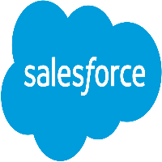
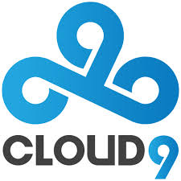

Gmail (Caas)
Communications as a Service (CaaS) is an outsourced enterprise communications solution that can be leased from a single vendor. Such communications can include voice over IP (VoIP or Internet telephony), instant messaging (IM), collaboration and videoconference applications using fixed and mobile devices. CaaS has evolved along the same lines as Software as a Service (SaaS).
Gmail is a free, advertising-supported email service developed by Google. Users can access Gmail on the web and using third-party programs that synchronize email content through POP or IMAP protocols. Gmail started as a limited beta release on April 1, 2004, and ended its testing phase on July 7, 2009.As of July 2017, Gmail has 1.2 billion active users worldwide,[citation needed] and was the first app on the Google Play Store to hit one billion installations on Android devices. According to a 2014 estimate, 60% of mid-sized US companies, and 92% of startups, were using Gmail.
SalesForce (Sass)
Software as a service is a way of delivering centrally hosted applications over the Internet as a service. SaaS applications are sometimes called web-based software, on-demand software, or hosted software. Whatever the name, SaaS applications run on a SaaS provider’s servers. Instead of installing and maintaining software, you simply access it via the Internet, freeing yourself from complex software and hardware management. The provider manages access to the application, including security, availability, and performance. SaaS business applications are usually accessed by users using a thin client via a web browser
Salesforce.com's customer relationship management (CRM) service is broken down into several broad categories: Commerce Cloud, Sales Cloud, Service Cloud, data Cloud (including Jigsaw), Marketing Cloud, Community Cloud (including Chatter), Analytics Cloud, App Cloud, and IoT with over 100,000 customers.Salesforce is the primary enterprise offering within the Salesforce platform. It provides companies with an interface for case management and task management, and a system for automatically routing and escalating important events. The Salesforce customer portal provides customers the ability to track their own cases, includes a social networking plug-in that enables the user to join the conversation about their company on social networking websites, provides analytical tools and other services including email alert, Google search, and access to customers' entitlement and contracts
Amazon (Iass)
Infrastructure as a Service, sometimes abbreviated as IaaS, contains the basic building blocks for cloud IT and typically provide access to networking features, computers (virtual or on dedicated hardware), and data storage space. Infrastructure as a Service provides you with the highest level of flexibility and management control over your IT resources and is most similar to existing IT resources that many IT departments and developers are familiar with today.
Amazon.com, Inc., is an American electronic commerce and cloud computing company based in Seattle, Washington that was founded by Jeff Bezos on July 5, 1994. The tech giant is the largest Internet retailer in the world as measured by revenue and market capitalization, and second largest after Alibaba Group in terms of total sales. The amazon.com website started as an online bookstore and later diversified to sell video downloads/streaming, MP3 downloads/streaming, audiobook downloads/streaming, software, video games, electronics, apparel, furniture, food, toys, and jewelry. The company also produces consumer electronics—Kindle e-readers, Fire tablets, Fire TV, and Echo—and is the world's largest provider of cloud infrastructure services (IaaS and PaaS). Amazon also sells certain low-end products under its in-house brand AmazonBasics
Cloud9 (Paas)
Platform as a Service (PaaS) or platform base service is a category of cloud computing services that provides a platform allowing customers to develop, run, and manage applications without the complexity of building and maintaining the infrastructure typically associated with developing and launching an app. PaaS can be delivered in three ways: as a public cloud service from a provider, where the consumer controls software deployment with minimal configuration options, and the provider provides the networks, servers, storage, operating system (OS), middleware (e.g. Java runtime, .NET runtime, integration, etc.), database and other services to host the consumer's application; as a private service (software or appliance) inside the firewall; or as software deployed on a public infrastructure as a service.
Ccloud9 provides a computing platform and/or solution stack typically including operating system, programming language execution environment, database, and web server. Application developers can develop and run their software solutions on a cloud platform without the cost and complexity of buying and managing the underlying hardware and software layers. With some PaaS offers, the underlying compute and storage resources scale automatically to match application demand such that the cloud user does not have to allocate resources manually.
Tech Services